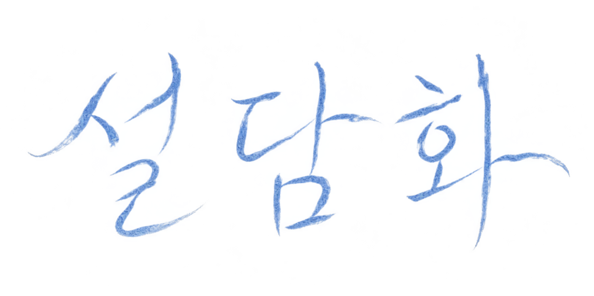
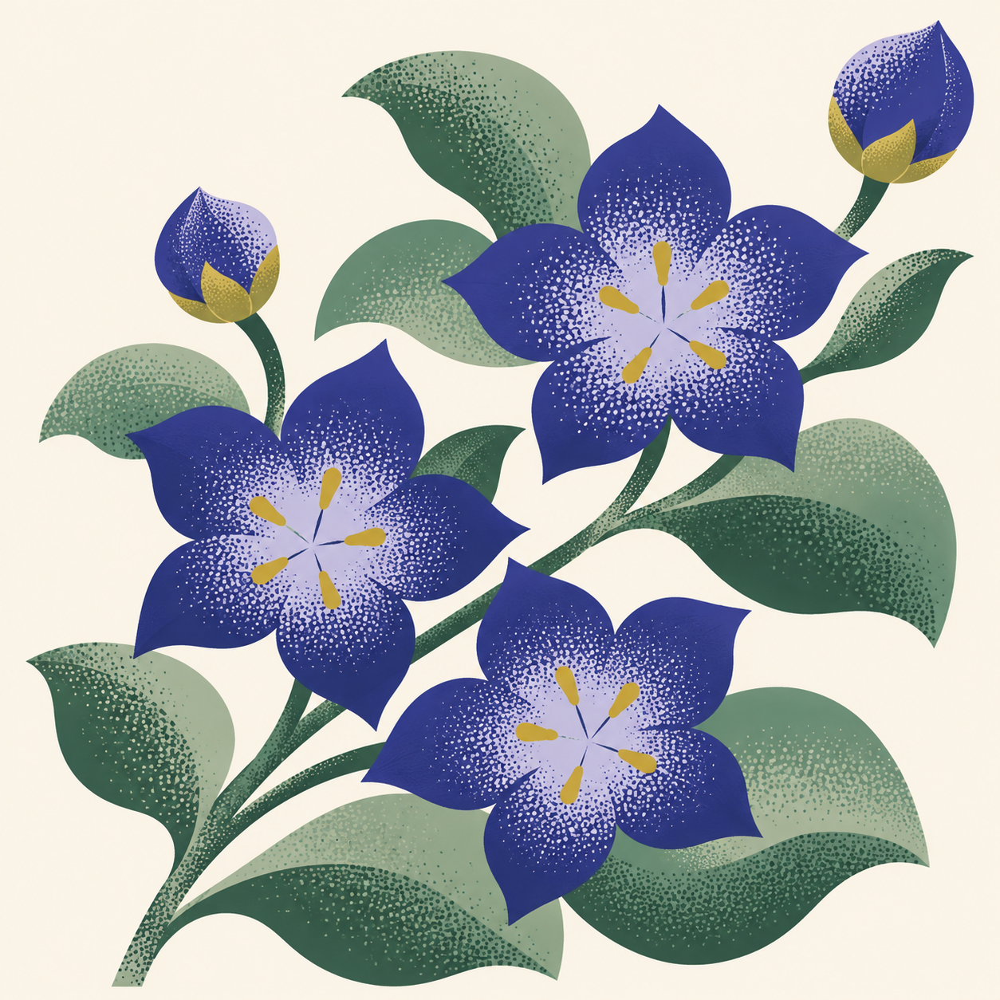

다시 쓰이는 포장
포장을 푼 뒤 파우치나 소품백으로 쓰는 전통 원단 패키징.


포장을 푼 뒤 파우치나 소품백으로 쓰는 전통 원단 패키징.
받는 사람의 분위기와 전하고 싶은 마음에 맞춰 고른 꽃.
광장시장에서 만난 전통 원단이 설담화의 출발점입니다. 선물을 열어본 뒤에도 그날의 마음을 곁에 둘 수 있도록, 포장에 다음 쓰임을 담습니다.
아이보리와 푸른 원단을 겹쳐 묶고, 풀어낸 뒤에도 쓸 수 있도록 형태를 살린 패키징 시안입니다.
파우치형 포장은 액세서리나 작은 소품을 담는 데 사용할 수 있습니다.
받는 사람에게서 떠오르는 색과 선물을 건네는 날의 분위기부터 생각해 보세요.